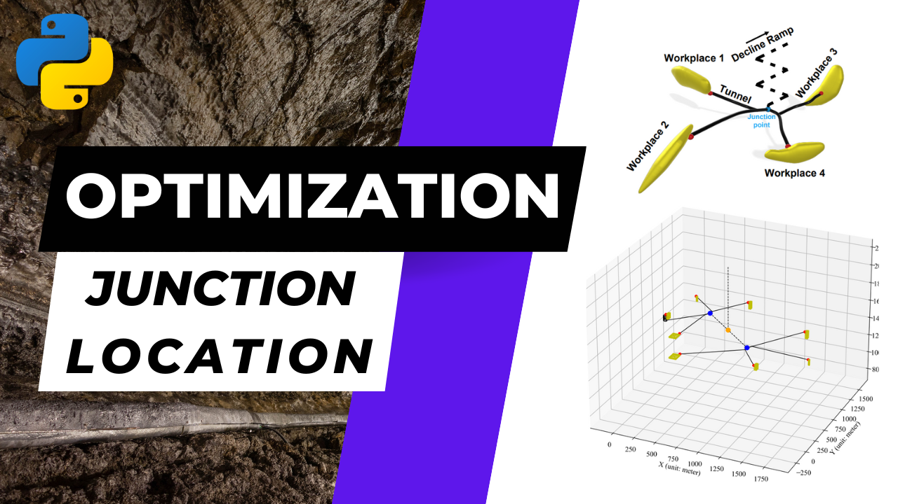
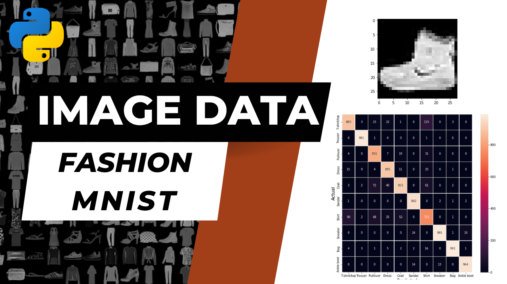

Maximilien Meyrieux
ClusterDC: a Novel Clustering Algorithm based on Kernel-Density Contours to Characterize Geological Materials

Summary: The ore and waste materials extracted from a mineral deposit during the mining process can have significant variations in their physical and chemical characteristics. These variations can pose unexpected difficulties for mineral processing and the management of environmental impacts. These challenges can be mitigated by robust material characterization. In particular, a heterogeneous set of drill-core samples can often be divided into more uniform groups with similar multi-element compositions referred to as compositional clusters. However, the current approaches to geological material characterization are often subjective and usually involve a significant human workload, as there is no optimized, well-defined, and robust methodology to perform this task. This paper introduces a novel clustering algorithm, ClusterDC, and proposes a robust, data-driven workflow that incorporates expert knowledge for selecting relevant features. The workflow aims to automatically identify clusters within geological datasets, providing a reliable representation of the geological variability of an ore deposit. Following feature selection, a robust, state-of-the-art dimension-reduction algorithm is proposed, followed by ClusterDC, to achieve scalable clustering performance on large datasets. A case study is carried out utilizing an assay dataset from a mining project to demonstrate the proposed methodology, aiming to identify distinct ore types with characteristic compositional footprints. The case-study results demonstrate that the proposed workflow has the potential to improve the characterization of geological materials and thus help mining companies mitigate risks by enhancing their orebody knowledge.
Keywords:Density-based Clustering; Unsupervised Machine Learning; Dimension Reduction; Geological Material Characterization; Geometallurgy; Compositional Clusters; Lithogeochemistry
See more on my Github: here
Transformer Encoders vs LSTMs for Time Series Gangue Forecast Prediction in Flotation Concentrate with Keras

Summary: Flotation is a commonly used technique in mineral processing to separate valuable minerals from gangue material. In the case of iron ore, reverse cationic flotation is often used to separate iron from silica. By adjusting the chemical properties of the pulp and adding reagents, iron minerals can be made to sink to the bottom while silica particles (gangue) float to the surface. Accurate gangue forecast prediction is crucial for optimizing the flotation process and improving the efficiency of iron ore extraction. In this study, the use of Transformer Encoders and LSTM models for gangue forecast prediction in flotation concentrate is demonstrated and their performances are compared. The results show that both models can be effectively used for this task, with the transformer model achieving slightly better results in terms of accuracy. This work highlights the potential of using deep learning techniques for optimizing mineral processing operations and improving the efficiency of ore extraction.
Keywords: Flotation; Mineral Processing; Machine Learning; Python Programming; Transformer Encoders; Long Short-Term Memory (LSTM); Time Series Forecasting; Keras; Positional Encoding
See more on my Github: here
Optimal Junction Localization Minimizing Maximum Miners' Evacuation Distance in Underground Mining Networks
Summary: Safety is a primary consideration in underground mining operations. Accidents could result in fatalities, injuries, as well as considerable financial and reputational losses to the mining company. As an underground mine consists of many workspaces distributed in various zones, the selection of junction locations in the network could be significant for timely evacuation of miners from different areas. This research project proposes a methodology to determine the optimal location of a junction point minimizing the maximum evacuation distance of the miners, and thus this geometric optimization is formulated as a MiniMax problem. The solver developed is based on the Welzl algorithm. The method is fully implemented in Python, and its functionality is demonstrated by conducting various case studies in 2D and 3D mining drifts networks.
Keywords: Mine Safety; Underground Mine Design; Python Object-Oriented Programming; Mathematical Optimization; MiniMax Problem; Welzl algorithm; Computational Geometry
Article published: here
Data Scraping of the Statistics Canada Website to Create a Power BI Dashboard on Canadian Mining Production

Summary: The objective of this project is to realize an automatic scraping of several pages of the site of Statistics Canada to create a Pandas dataframe gathering all the data collected. The collected data is then used to create an interactive Power BI dashboard.
Keywords: Mineral Economics; Data Scraping; Python Programming; Business Intelligence; Power BI
See more on my Github: here
Coding from Scratch a MLP Model for Image Classification on the Fashion MNIST + Test of the PyTorch CNN
Summary: The objective is to classify image data of the Fashion-MNIST dataset through multiple-layer perceptron (MLP). The image dataset is vectorized and normalized before model training. Seven MLPs are designed with different settings and structures. Besides, a PyTorch Convolutional neural network (CNN) is also used as a comparison. In addition, a tuned MLP architecture is proposed to optimize the performance at its best.
Keywords: Convolutional Neural Network; Multiple-Layer Perceptron; Hyperparameters Tuning; Activation Functions; Image Classification; Fashion-MNIST; Machine Learning; Python Programming
Status: Completed personal project
See more on my Github: here
Testing Different Multiclass Regression Models on the IMDB and 20 newsgroups datasets

Summary: The main task of this study is to implement two supervised machine learning models known as Logistic Regression (LR) and Multiclass Regression (MR) to perform classification predictions for textual data (IMDB Reviews and 20 newsgroups). The datasets are first cleaned and trimmed to reduce the number of features to be included in the train and test datasets. The objective is to keep the most representative words to increase the prediction accuracy. Then, the developed models are trained and used for class prediction in the test dataset.
Keywords: Opinion Mining; Logistic Regression; Multilinear Regression; Multiclass Regression; 20 Newsgroups; Internet Movie Database; Machine Learning; Python Programming
Status: Completed personal project
See more on my Github: here